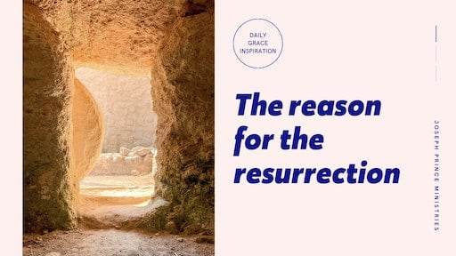
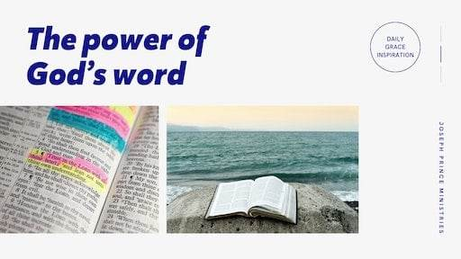
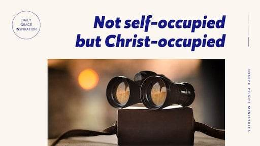
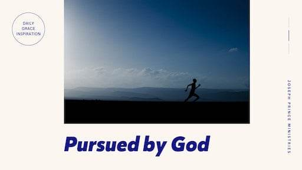
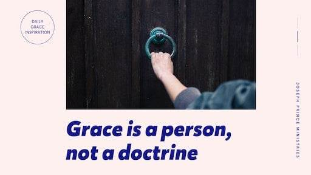
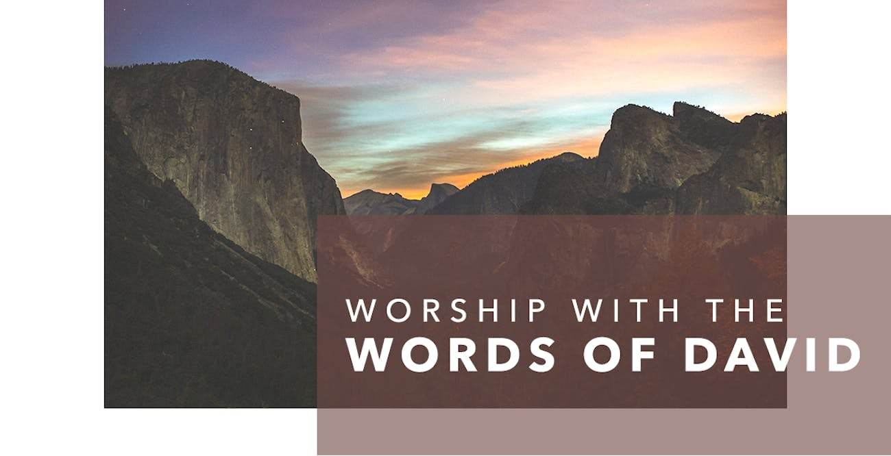

JE PUIS TOUT PAR CELUI QUI ME FORTIFIE.
Philippiens 4 : 13
01Avr
02Avr
03Avr
04Avr
05Avr
06Avr
07Avr
08Avr
09Avr
10Avr
11Avr
12Avr
13Avr
14Avr
15Avr
16Avr
17Avr
18Avr
19Avr
20Avr
21Avr
22Avr
23Avr
24Avr
25Avr
26Avr
27Avr
28Avr
29Avr
30Avr
01Mai
02Mai
03Mai
04Mai
05Mai
06Mai
07Mai
08Mai
09Mai
10Mai
11Mai
12Mai
13Mai
14Mai
15Mai
16Mai
17Mai
18Mai
19Mai
20Mai
21Mai
22Mai
23Mai
24Mai
25Mai
26Mai
27Mai
28Mai
29Mai
30Mai
31Mai
01Juin
02Juin
03Juin
04Juin
05Juin
06Juin
07Juin
08Juin
09Juin
10Juin
11Juin
12Juin
13Juin
14Juin
15Juin
16Juin
17Juin
18Juin
19Juin
20Juin
21Juin
22Juin
23Juin
24Juin
25Juin
26Juin
27Juin
28Juin
29Juin
30Juin
Samedi 01 Avril 2023
| Psaume 91:14 |
| 14 Puisqu'il m'aime, je le délivrerai; Je le protégerai, puisqu'il connaît mon nom. |
| Psaume 91:14 |
| 14 Puisqu'il m'aime, je le délivrerai; Je le protégerai, puisqu'il connaît mon nom. |
Dimanche 02 Avril 2023
| Psaume 103:8,10-12 |
| 8 L'Éternel est miséricordieux et compatissant, Lent à la colère et riche en bonté; 10 Il ne nous traite pas selon nos péchés, Il ne nous punit pas selon nos iniquités. 11 Mais autant les cieux sont élevés au-dessus de la terre, Autant sa bonté est grande pour ceux qui le craignent; 12 Autant l'orient est éloigné de l'occident, Autant il éloigne de nous nos transgressions. |
| Jude 1:21 |
| 21 maintenez-vous dans l'amour de Dieu, en attendant la miséricorde de notre Seigneur Jésus Christ pour la vie éternelle. |
Lundi 03 Avril 2023
| Luc 10:38–42 |
| 38 Comme Jésus était en chemin avec ses disciples, il entra dans un village, et une femme, nommée Marthe, le reçut dans sa maison. 39 Elle avait une soeur, nommée Marie, qui, s'étant assise aux pieds du Seigneur, écoutait sa parole. 40 Marthe, occupée à divers soins domestiques, survint et dit: Seigneur, cela ne te fait-il rien que ma soeur me laisse seule pour servir? Dis-lui donc de m'aider. 41 Le Seigneur lui répondit: Marthe, Marthe, tu t'inquiètes et tu t'agites pour beaucoup de choses. 42 Une seule chose est nécessaire. Marie a choisi la bonne part, qui ne lui sera point ôtée. |
| Romains 10:17 |
| 17 Ainsi la foi vient de ce qu'on entend, et ce qu'on entend vient de la parole de Christ. |
Mardi 04 Avril 2023
| Matthieu 6:31-33 |
| 31 Ne vous inquiétez donc point, et ne dites pas: Que mangerons-nous? que boirons-nous? de quoi serons-nous vêtus? 32 Car toutes ces choses, ce sont les païens qui les recherchent. Votre Père céleste sait que vous en avez besoin. 33 Cherchez premièrement le royaume et la justice de Dieu; et toutes ces choses vous seront données par-dessus. |
| Romains 8:31-32 |
| 31 Que dirons-nous donc à l'égard de ces choses? Si Dieu est pour nous, qui sera contre nous? 32 Lui, qui n'a point épargné son propre Fils, mais qui l'a livré pour nous tous, comment ne nous donnera-t-il pas aussi toutes choses avec lui? |
Mercredi 05 Avril 2023
 |
| Romains 8:1 |
| 1 Il n'y a donc maintenant aucune condamnation pour ceux qui sont en Jésus Christ. |
| Exode 12:3 |
| 3 Parlez à toute l'assemblée d'Israël, et dites: Le dixième jour de ce mois, on prendra un agneau pour chaque famille, un agneau pour chaque maison. |
Jeudi 06 Avril 2023
| 1 Corinthiens 1:30-31 |
| 30 Or, c'est par lui que vous êtes en Jésus Christ, lequel, de par Dieu, a été fait pour nous sagesse, justice et sanctification et rédemption, 31 afin, comme il est écrit, Que celui qui se glorifie se glorifie dans le Seigneur. |
| 1 Jean 4:8 |
| 8 Celui qui n'aime pas n'a pas connu Dieu, car Dieu est amour. |
Vendredi 07 Avril 2023
| 2 Corinthiens 3:18 |
| 18 Nous tous qui, le visage découvert, contemplons comme dans un miroir la gloire du Seigneur, nous sommes transformés en la même image, de gloire en gloire, comme par le Seigneur, l'Esprit. |
 |
| Hébreux 13:5 |
| 5 Ne vous livrez pas à l'amour de l'argent; contentez-vous de ce que vous avez; car Dieu lui-même a dit: Je ne te délaisserai point, et je ne t'abandonnerai point. |
Samedi 08 Avril 2023
| 1 Rois 20:23,28 |
| 23 Les serviteurs du roi de Syrie lui dirent: Leur dieu est un dieu de montagnes; c'est pourquoi ils ont été plus forts que nous. Mais combattons-les dans la plaine, et l'on verra si nous ne serons pas plus forts qu'eux. 28 L'homme de Dieu s'approcha, et dit au roi d'Israël: Ainsi parle l'Éternel: Parce que les Syriens ont dit: L'Éternel est un dieu des montagnes et non un dieu des vallées, je livrerai toute cette grande multitude entre tes mains, et vous saurez que je suis l'Éternel. |
| Proverbes 3:6 |
| 6 Reconnais-le dans toutes tes voies, Et il aplanira tes sentiers. |
Dimanche 09 Avril 2023
| 2 Corinthiens 1:20 |
| 20 car, pour ce qui concerne toutes les promesses de Dieu, c'est en lui qu'est le oui; c'est pourquoi encore l'Amen par lui est prononcé par nous à la gloire de Dieu. |
|  |
| Romains 4:25 |
| 25 lequel a été livré pour nos offenses, et est ressuscité pour notre justification. |
Lundi 10 Avril 2023
| Nombres 23:21 |
| 21 Il n'aperçoit point d'iniquité en Jacob, Il ne voit point d'injustice en Israël; L'Éternel, son Dieu, est avec lui, Il est son roi, l'objet de son allégresse. |
| Romains 3:20 |
| 20 Car nul ne sera justifié devant lui par les oeuvres de la loi, puisque c'est par la loi que vient la connaissance du péché. |
Mardi 11 Avril 2023
| 1 Corinthiens 6:17 |
| 17 Mais celui qui s'attache au Seigneur est avec lui un seul esprit. |
| 2 Corinthiens 5:7 |
| 7 car nous marchons par la foi et non par la vue, |
Mercredi 12 Avril 2023
| Proverbes 3:6 |
| 6 Reconnais-le dans toutes tes voies, Et il aplanira tes sentiers. |
| Luc 6:19 |
| 19 Et toute la foule cherchait à le toucher, parce qu'une force sortait de lui et les guérissait tous. |
Jeudi 13 Avril 2023
| Philippiens 4: 6-7 |
| 6 Ne vous inquiétez de rien; mais en toute chose faites connaître vos besoins à Dieu par des prières et des supplications, avec des actions de grâces. 7 Et la paix de Dieu, qui surpasse toute intelligence, gardera vos coeurs et vos pensées en Jésus Christ. |
| 2 Pierre 3:9 |
| 9 Le Seigneur ne tarde pas dans l'accomplissement de la promesse, comme quelques-uns le croient; mais il use de patience envers vous, ne voulant pas qu'aucun périsse, mais voulant que tous arrivent à la repentance. |
Vendredi 14 Avril 2023
| Luc 6:6, 10 |
| 6 Il arriva, un autre jour de sabbat, que Jésus entra dans la synagogue, et qu'il enseignait. Il s'y trouvait un homme dont la main droite était sèche. 10 Alors, promenant ses regards sur eux tous, il dit à l'homme: Étends ta main. Il le fit, et sa main fut guérie. |
| Matthieu 4:10 |
| 10 Jésus lui dit: Retire-toi, Satan! Car il est écrit: Tu adoreras le Seigneur, ton Dieu, et tu le serviras lui seul. |
Samedi 15 Avril 2023
| Jean 8:32 |
| 32 vous connaîtrez la vérité, et la vérité vous affranchira. |
| Exode 15:25 |
| 25 Moïse cria à l'Éternel; et l'Éternel lui indiqua un bois, qu'il jeta dans l'eau. Et l'eau devint douce. Ce fut là que l'Éternel donna au peuple des lois et des ordonnances, et ce fut là qu'il le mit à l'épreuve. |
Dimanche 16 Avril 2023
| Matthieu 12:35 |
| 35 L'homme bon tire de bonnes choses de son bon trésor, et l'homme méchant tire de mauvaises choses de son mauvais trésor. |
|  |
| Hébreux 4:12 |
| 12 Car la parole de Dieu est vivante et efficace, plus tranchante qu'une épée quelconque à deux tranchants, pénétrante jusqu'à partager âme et esprit, jointures et moelles; elle juge les sentiments et les pensées du coeur. |
Lundi 17 Avril 2023
| Genèse 14:22 |
| 22 Abram répondit au roi de Sodome: Je lève la main vers l'Éternel, le Dieu Très Haut, maître du ciel et de la terre: |
| Hébreux 4:12 |
| 12 Car la parole de Dieu est vivante et efficace, plus tranchante qu'une épée quelconque à deux tranchants, pénétrante jusqu'à partager âme et esprit, jointures et moelles; elle juge les sentiments et les pensées du coeur. |
Mardi 18 Avril 2023
| Psaume 118:8 |
| 8 Mieux vaut chercher un refuge en l'Éternel Que de se confier à l'homme; |
|  |
| Galates 2:20 |
| 20 J'ai été crucifié avec Christ; et si je vis, ce n'est plus moi qui vis, c'est Christ qui vit en moi; si je vis maintenant dans la chair, je vis dans la foi au Fils de Dieu, qui m'a aimé et qui s'est livré lui-même pour moi. |
Mercredi 19 Avril 2023
| Luc 15:20–24 |
| 20 Et il se leva, et alla vers son père. Comme il était encore loin, son père le vit et fut ému de compassion, il courut se jeter à son cou et le baisa. 21 Le fils lui dit: Mon père, j'ai péché contre le ciel et contre toi, je ne suis plus digne d'être appelé ton fils. 22 Mais le père dit à ses serviteurs: Apportez vite la plus belle robe, et l'en revêtez; mettez-lui un anneau au doigt, et des souliers aux pieds. 23 Amenez le veau gras, et tuez-le. Mangeons et réjouissons-nous; 24 car mon fils que voici était mort, et il est revenu à la vie; il était perdu, et il est retrouvé. Et ils commencèrent à se réjouir. |
| Jean 10:3-4 |
| 3 Le portier lui ouvre, et les brebis entendent sa voix; il appelle par leur nom les brebis qui lui appartiennent, et il les conduit dehors. 4 Lorsqu'il a fait sortir toutes ses propres brebis, il marche devant elles; et les brebis le suivent, parce qu'elles connaissent sa voix. |
Jeudi 20 Avril 2023
| Psaume 91:9–10 |
| 9 Car tu es mon refuge, ô Éternel! Tu fais du Très Haut ta retraite. 10 Aucun malheur ne t'arrivera, Aucun fléau n'approchera de ta tente. |
| Psaume 91:11–12 |
| 11 Car il ordonnera à ses anges De te garder dans toutes tes voies; 12 Ils te porteront sur les mains, De peur que ton pied ne heurte contre une pierre. |
Vendredi 21 Avril 2023
| Hébreux 13:8 |
| 8 Jésus Christ est le même hier, aujourd'hui, et éternellement. |
| 1 Jean 3:1 |
| 1 Voyez quel amour le Père nous a témoigné, pour que nous soyons appelés enfants de Dieu! Et nous le sommes. Si le monde ne nous connaît pas, c'est qu'il ne l'a pas connu. |
Samedi 22 Avril 2023
| 2 Corinthiens 5:21 |
| 21 Celui qui n'a point connu le péché, il l'a fait devenir péché pour nous, afin que nous devenions en lui justice de Dieu. |
| Jérémie 17:7-8 |
| 7 Béni soit l'homme qui se confie dans l'Éternel, Et dont l'Éternel est l'espérance! 8 Il est comme un arbre planté près des eaux, Et qui étend ses racines vers le courant; Il n'aperçoit point la chaleur quand elle vient, Et son feuillage reste vert; Dans l'année de la sécheresse, il n'a point de crainte, Et il ne cesse de porter du fruit. |
Dimanche 23 Avril 2023
| Esaïe 53:5 |
| 5 Mais il était blessé pour nos péchés, Brisé pour nos iniquités; Le châtiment qui nous donne la paix est tombé sur lui, Et c'est par ses meurtrissures que nous sommes guéris. |
| Luc 7:48,50 |
| 48 Et il dit à la femme: Tes péchés sont pardonnés. 50 Mais Jésus dit à la femme: Ta foi t'a sauvée, va en paix. |
Lundi 24 Avril 2023
| 1 Jean 4:17 |
| 17 v |
| Psaume 23:1 |
| 1 Cantique de David. L'Éternel est mon berger: je ne manquerai de rien. |
Mardi 25 Avril 2023
| Colossiens 1:27 |
| 1 à qui Dieu a voulu faire connaître quelle est la glorieuse richesse de ce mystère parmi les païens, savoir: Christ en vous, l'espérance de la gloire. |
| Hébreux 10:12, 14 |
| 12 lui, après avoir offert un seul sacrifice pour les péchés, s'est assis pour toujours à la droite de Dieu, 14 Car, par une seule offrande, il a amené à la perfection pour toujours ceux qui sont sanctifiés. |
Mercredi 26 Avril 2023
| Matthieu 8:13 |
| 13 Puis Jésus dit au centenier: Va, qu'il te soit fait selon ta foi. Et à l'heure même le serviteur fut guéri. |
|  |
| Jean 4 :4-7 |
| 4 Comme il fallait qu'il passât par la Samarie, 5 il arriva dans une ville de Samarie, nommée Sychar, près du champ que Jacob avait donné à Joseph, son fils. 6 Là se trouvait le puits de Jacob. Jésus, fatigué du voyage, était assis au bord du puits. C'était environ la sixième heure. 7 Une femme de Samarie vint puiser de l'eau. Jésus lui dit: Donne-moi à boire. |
Jeudi 27 Avril 2023
| Psaume 34:8 |
| 8 Sentez et voyez combien l'Éternel est bon! Heureux l'homme qui cherche en lui son refuge! |
| 1 Pierre 5:8 |
| 8 Soyez sobres, veillez. Votre adversaire, le diable, rôde comme un lion rugissant, cherchant qui il dévorera. |
Vendredi 28 Avril 2023
| Esaïe 61:1 |
| 1 L'esprit du Seigneur, l'Éternel, est sur moi, Car l'Éternel m'a oint pour porter de bonnes nouvelles aux malheureux; Il m'a envoyé pour guérir ceux qui ont le coeur brisé, Pour proclamer aux captifs la liberté, Et aux prisonniers la délivrance; |
| 1 Rois 3:9 |
| 9 Accorde donc à ton serviteur un coeur intelligent pour juger ton peuple, pour discerner le bien du mal! Car qui pourrait juger ton peuple, ce peuple si nombreux? |
Samedi 29 Avril 2023
| Deutéronome 28:2 |
| 2 Voici toutes les bénédictions qui se répandront sur toi et qui seront ton partage, lorsque tu obéiras à la voix de l'Éternel, ton Dieu: |
| Exode 2:23–24 |
| 23 Longtemps après, le roi d'Égypte mourut, et les enfants d'Israël gémissaient encore sous la servitude, et poussaient des cris. Ces cris, que leur arrachait la servitude, montèrent jusqu'à Dieu. 24 Dieu entendit leurs gémissements, et se souvint de son alliance avec Abraham, Isaac et Jacob. |
Dimanche 30 Avril 2023
| Genèse 24:12 |
| 12 Et il dit: Éternel, Dieu de mon seigneur Abraham, fais-moi, je te prie, rencontrer aujourd'hui ce que je désire, et use de bonté envers mon seigneur Abraham! |
|  |
| Jean 1:17 |
| 17 car la loi a été donnée par Moïse, la grâce et la vérité sont venues par Jésus Christ. |
Lundi 01 Mai 2023
 |
| Romains 8:3 |
| 3 Car-chose impossible à la loi, parce que la chair la rendait sans force, -Dieu a condamné le péché dans la chair, en envoyant, à cause du péché, son propre Fils dans une chair semblable à celle du péché, |
| Romains 8:3 |
| 3 Car-chose impossible à la loi, parce que la chair la rendait sans force, -Dieu a condamné le péché dans la chair, en envoyant, à cause du péché, son propre Fils dans une chair semblable à celle du péché, |
Mardi 02 Mai 2023
| Luc 6:19 |
| 19 Et toute la foule cherchait à le toucher, parce qu'une force sortait de lui et les guérissait tous. |
| 2 Chroniques 20:3-4 |
| 3 Dans sa frayeur, Josaphat se disposa à chercher l'Éternel, et il publia un jeûne pour tout Juda. 4 Juda s'assembla pour invoquer l'Éternel, et l'on vint de toutes les villes de Juda pour chercher l'Éternel. |
Mercredi 03 Mai 2023
| 2 Pierre 1:3-4 |
| 3 Comme sa divine puissance nous a donné tout ce qui contribue à la vie et à la piété, au moyen de la connaissance de celui qui nous a appelés par sa propre gloire et par sa vertu, 4 lesquelles nous assurent de sa part les plus grandes et les plus précieuses promesses, afin que par elles vous deveniez participants de la nature divine, en fuyant la corruption qui existe dans le monde par la convoitise, |
| Philippiens 4:7 |
| 7 Et la paix de Dieu, qui surpasse toute intelligence, gardera vos coeurs et vos pensées en Jésus Christ. |
Jeudi 04 Mai 2023
| 1 John 4:4 |
| 4 Vous, petits enfants, vous êtes de Dieu, et vous les avez vaincus, parce que celui qui est en vous est plus grand que celui qui est dans le monde. |
 |
| 2 Corinthians 11:3 |
| 3 Toutefois, de même que le serpent séduisit Eve par sa ruse, je crains que vos pensées ne se corrompent et ne se détournent de la simplicité à l'égard de Christ. |
Vendredi 05 Mai 2023
| 3 Jean 1:2 |
| 2 Bien-aimé, je souhaite que tu prospères à tous égards et sois en bonne santé, comme prospère l'état de ton âme. |
| Esaïe 43:25 |
| 25 C'est moi, moi qui efface tes transgressions pour l'amour de moi, Et je ne me souviendrai plus de tes péchés. |
Samedi 06 Mai 2023
| Romains 10:17 |
| 17 Ainsi la foi vient de ce qu'on entend, et ce qu'on entend vient de la parole de Christ. |
| Luc 15 :4-6 |
| 4 Quel homme d'entre vous, s'il a cent brebis, et qu'il en perde une, ne laisse les quatre-vingt-dix-neuf autres dans le désert pour aller après celle qui est perdue, jusqu'à ce qu'il la retrouve? 5 Lorsqu'il l'a retrouvée, il la met avec joie sur ses épaules, 6et, de retour à la maison, il appelle ses amis et ses voisins, et leur dit: Réjouissez-vous avec moi, car j'ai retrouvé ma brebis qui était perdue. |
Dimanche 07 Mai 2023
| Jean 1:17 |
| 17 car la loi a été donnée par Moïse, la grâce et la vérité sont venues par Jésus Christ. |
| Luc 10:39 |
| 39 Elle avait une soeur, nommée Marie, qui, s'étant assise aux pieds du Seigneur, écoutait sa parole. |
Lundi 08 Mai 2023
| 1 Jean 4:17 |
| 17 Tel il est, tels nous sommes aussi dans ce monde: c'est en cela que l'amour est parfait en nous, afin que nous ayons de l'assurance au jour du jugement. |
| Jean 13:23 |
| 23 Un des disciples, celui que Jésus aimait, était couché sur le sein de Jésus. |
Mardi 09 Mai 2023
| Actes 16:6-7 |
| 6 Ayant été empêchés par le Saint Esprit d'annoncer la parole dans l'Asie, ils traversèrent la Phrygie et le pays de Galatie. 7 Arrivés près de la Mysie, ils se disposaient à entrer en Bithynie; mais l'Esprit de Jésus ne le leur permit pas. |
| Romains 7:24-25 |
| 24 Misérable que je suis! Qui me délivrera du corps de cette mort?... 25 Grâces soient rendues à Dieu par Jésus Christ notre Seigneur!... Ainsi donc, moi-même, je suis par l'entendement esclave de la loi de Dieu, et je suis par la chair esclave de la loi du péché. |
Mercredi 10 Mai 2023
| 2 Thessaloniciens 3:16 |
| 16 Que le Seigneur de la paix vous donne lui-même le paix en tout temps, de toute manière! Que le Seigneur soit avec vous tous! |
| Colossiens 1:12–14 |
| 12 Rendez grâces au Père, qui vous a rendus capables d'avoir part à l'héritage des saints dans la lumière, 13 qui nous a délivrés de la puissance des ténèbres et nous a transportés dans le royaume du Fils de son amour, 14 en qui nous avons la rédemption, la rémission des péchés. |
Jeudi 11 Mai 2023
|  |
| Psaume 3:3–4 |
| 3 Mais toi, ô Éternel! tu es mon bouclier, Tu es ma gloire, et tu relèves ma tête. 4 De ma voix je crie à l'Éternel, Et il me répond de sa montagne sainte. |
| Job 5:19–22 |
| 19 Six fois il te délivrera de l'angoisse, Et sept fois le mal ne t'atteindra pas. 20 Il te sauvera de la mort pendant la famine, Et des coups du glaive pendant la guerre. 21 Tu seras à l'abri du fléau de la langue, Tu seras sans crainte quand viendra la dévastation. 22 Tu te riras de la dévastation comme de la famine, Et tu n'auras pas à redouter les bêtes de la terre; |
Vendredi 12 Mai 2023
| Romains 7 :9-10 |
| 9 Pour moi, étant autrefois sans loi, je vivais; mais quand le commandement vint, le péché reprit vie, et moi je mourus. 10 Ainsi, le commandement qui conduit à la vie se trouva pour moi conduire à la mort. |
| Luc 15:20-24 |
| 20 Et il se leva, et alla vers son père. Comme il était encore loin, son père le vit et fut ému de compassion, il courut se jeter à son cou et le baisa. 21 Le fils lui dit: Mon père, j'ai péché contre le ciel et contre toi, je ne suis plus digne d'être appelé ton fils. 22 Mais le père dit à ses serviteurs: Apportez vite la plus belle robe, et l'en revêtez; mettez-lui un anneau au doigt, et des souliers aux pieds. 23 Amenez le veau gras, et tuez-le. Mangeons et réjouissons-nous; 24 car mon fils que voici était mort, et il est revenu à la vie; il était perdu, et il est retrouvé. Et ils commencèrent à se réjouir. |
Samedi 13 Mai 2023
| Romains 8:31 |
| 31 Que dirons-nous donc à l'égard de ces choses? Si Dieu est pour nous, qui sera contre nous? |
| Genèse 12:2 |
| 2 Je ferai de toi une grande nation, et je te bénirai; je rendrai ton nom grand, et tu seras une source de bénédiction. |
Dimanche 14 Mai 2023
| Actes 13:38–39 |
| 38 Sachez donc, hommes frères, que c'est par lui que le pardon des péchés vous est annoncé, 39 et que quiconque croit est justifié par lui de toutes les choses dont vous ne pouviez être justifiés par la loi de Moïse. |
| 2 Corinthiens 5:17-20 |
| 17 Si quelqu'un est en Christ, il est une nouvelle créature. Les choses anciennes sont passées; voici, toutes choses sont devenues nouvelles. 18 Et tout cela vient de Dieu, qui nous a réconciliés avec lui par Christ, et qui nous a donné le ministère de la réconciliation. 19 Car Dieu était en Christ, réconciliant le monde avec lui-même, en n'imputant point aux hommes leurs offenses, et il a mis en nous la parole de la réconciliation. 20 Nous faisons donc les fonctions d'ambassadeurs pour Christ, comme si Dieu exhortait par nous; nous vous en supplions au nom de Christ: Soyez réconciliés avec Dieu! |
Lundi 15 Mai 2023
| Luc 13:34–35 |
| 34 Jérusalem, Jérusalem, qui tues les prophètes et qui lapides ceux qui te sont envoyés, combien de fois ai-je voulu rassembler tes enfants, comme une poule rassemble sa couvée sous ses ailes, et vous ne l'avez pas voulu! 35 Voici, votre maison vous sera laissée; mais, je vous le dis, vous ne me verrez plus, jusqu'à ce que vous disiez: Béni soit celui qui vient au nom du Seigneur! |
| Proverbes 23:7 |
| 7 Car il est comme les pensées de son âme. Mange et bois, te dira-t-il; Mais son coeur n'est point avec toi. |
Mardi 16 Mai 2023
| 1 Jean 4:4 |
| 4 Vous, petits enfants, vous êtes de Dieu, et vous les avez vaincus, parce que celui qui est en vous est plus grand que celui qui est dans le monde. |
 |
| Romains 4:19 |
| 19 Et, sans faiblir dans la foi, il ne considéra point que son corps était déjà usé, puisqu'il avait près de cent ans, et que Sara n'était plus en état d'avoir des enfants. |
Mercredi 17 Mai 2023
 |
| 2 Corinthiens 5:21 |
| 21 Celui qui n'a point connu le péché, il l'a fait devenir péché pour nous, afin que nous devenions en lui justice de Dieu. |
| 2 Corinthiens 4:13 |
| 13 Et, comme nous avons le même esprit de foi qui est exprimé dans cette parole de l'Écriture: J'ai cru, c'est pourquoi j'ai parlé! nous aussi nous croyons, et c'est pour cela que nous parlons, |
Jeudi 18 Mai 2023
| Matthieu 6:31-33 |
| 31 Ne vous inquiétez donc point, et ne dites pas: Que mangerons-nous? que boirons-nous? de quoi serons-nous vêtus? 32 Car toutes ces choses, ce sont les païens qui les recherchent. Votre Père céleste sait que vous en avez besoin. 33 Cherchez premièrement le royaume et la justice de Dieu; et toutes ces choses vous seront données par-dessus. |
| Matthieu 7:11 |
| 11 Si donc, méchants comme vous l'êtes, vous savez donner de bonnes choses à vos enfants, à combien plus forte raison votre Père qui est dans les cieux donnera-t-il de bonnes choses à ceux qui les lui demandent. |
Vendredi 19 Mai 2023
 |
| Romains 8:31 |
| 31 Que dirons-nous donc à l'égard de ces choses? Si Dieu est pour nous, qui sera contre nous? |
| Jean 6:35 |
| 35 Jésus leur dit: Je suis le pain de vie. Celui qui vient à moi n'aura jamais faim, et celui qui croit en moi n'aura jamais soif. |
Samedi 20 Mai 2023
| Hébreux 8:12 |
| 12 Parce que je pardonnerai leurs iniquités, Et que je ne me souviendrai plus de leurs péchés. |
| Ecclésiaste 9:11 |
| 11 J'ai encore vu sous le soleil que la course n'est point aux agiles ni la guerre aux vaillants, ni le pain aux sages, ni la richesse aux intelligents, ni la faveur aux savants; car tout dépend pour eux du temps et des circonstances. |
Dimanche 21 Mai 2023
| Hébreux 6:11–12 |
| 11 Nous désirons que chacun de vous montre le même zèle pour conserver jusqu'à la fin une pleine espérance, 12 en sorte que vous ne vous relâchiez point, et que voue imitiez ceux qui, par la foi et la persévérance, héritent des promesses. |
| Jean 3:14-15 |
| 14 Et comme Moïse éleva le serpent dans le désert, il faut de même que le Fils de l'homme soit élevé, 15 afin que quiconque croit en lui ait la vie éternelle. |
Lundi 22 Mai 2023
| 1 Chroniques 4:9-10 |
| 9 Jaebets était plus considéré que ses frères; sa mère lui donna le nom de Jaebets, en disant: C'est parce que je l'ai enfanté avec douleur. 10 Jaebets invoqua le Dieu d'Israël, en disant: Si tu me bénis et que tu étendes mes limites, si ta main est avec moi, et si tu me préserves du malheur, en sorte que je ne sois pas dans la souffrance!... Et Dieu accorda ce qu'il avait demandé. |
| Psaume 91:1–2 |
| 1 Celui qui demeure sous l'abri du Très Haut Repose à l'ombre du Tout Puissant. 2 Je dis à l'Éternel: Mon refuge et ma forteresse, Mon Dieu en qui je me confie! |
Mardi 23 Mai 2023
| Ref |
| num Verset |
| Ref |
| Num Verset |